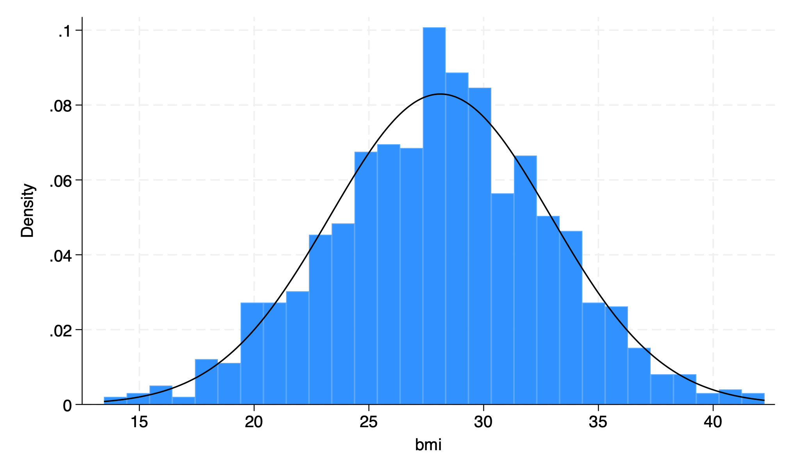
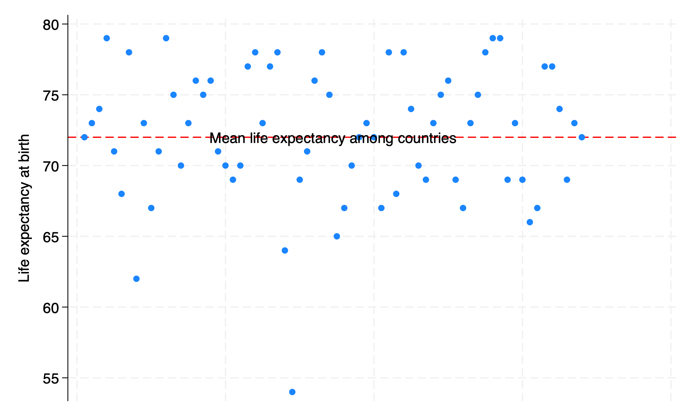

1. Overview, syntax, commands#
Please respond to the brief class survey that helps us better understand what your needs might be over the next five days. I’ll launch it on zoom for both the in-person and virtual attendees. The questions are asked here just for your convenience.
How will you be using Stata from 06/19/2023-06/23/2023?
Locally on my laptop
Remotely on another desktop or terminal
What operating system are you using locally or remotely?
MacOSX
Unix
Windows
Do you have any experience using Stata, SAS, R, Python, or any other statistical software?
No Experience. I have no prior experience with Stata and am unfamiliar with the software. Also, I have no experience with other statistical software such as SAS, R, Python, etc.
Basic Knowledge. I have a general understanding of basic commands but I require asistance to perform tasks.
Novice User. I am familiar with basic commands and can import data and do basic data cleaning. But I require guidance for more complex analyses.
Competent User. I am proficient in using Stata, SAS, R, Python, etc. for data exploration, descriptive statistics, basic inference (t-tests, chi-square tests), and regression
Advanced User. I can do multivariable regression and understand various statistical modeling options and techniques available in Stata, SAS, R, etc.
Expert User. I can write custom programs, macros, ado-files in Stata. Or I am an expert user of SAS, R, Python, etc. but have little to no experience with Stata.
1.1 Overview 🦀#
Ceci n’est pas une crabe
Show code cell source
import networkx as nx
import matplotlib.pyplot as plt
#import numpy as np
#import sklearn as skl
#
#plt.figure(figsize=[2, 2])
G = nx.DiGraph()
G.add_node("user", pos = (550,500) )
G.add_node("system", pos = (-550,500) )
G.add_node("program", pos = (-2000, 960) )
G.add_node("syntax", pos = (2000, 950) )
G.add_node("ado", pos = (-3000, 550) )
G.add_node("do", pos = (3000, 550) )
G.add_node("command", pos = (-1900, 150) )
G.add_node("queue", pos = (1900, 150) )
G.add_node("output", pos = (0,0))
G.add_node("dta", pos = (0, -475))
G.add_node("log", pos = (-1900, -475))
G.add_node("excel", pos = (-4000, -475))
G.add_node("word", pos = (1900, -475))
G.add_node("html", pos = (4000, -475))
G.add_node("publish", pos = (0, -950))
G.add_edges_from([ ("program","ado"), ("syntax", "do")])
G.add_edges_from([("ado", "command"), ("do", "queue") ])
G.add_edges_from([("command", "output"), ("queue", "output"),("output","excel"),("output","word"),("output","html")])
G.add_edges_from([("output","dta"),("output","log")])
G.add_edges_from([("dta","publish"),("log","publish"),("excel","publish"),("word","publish"),("html","publish")])
nx.draw(G,
nx.get_node_attributes(G, 'pos'),
with_labels=True,
font_weight='bold',
node_size = 4500,
node_color = "lightblue",
linewidths = 3)
ax= plt.gca()
ax.collections[0].set_edgecolor("#000000")
ax.set_xlim([-5000, 5000])
ax.set_ylim([-1000, 1000])
plt.show()

We are going to distinguish between two fundamental perspectives in this class:
System
Native (stata application, support files,
.adofiles)If you type
which helpinto your command window you get something like:/Applications/Stata/ado/base/h/help.ado
Third-party (typically
.adofiles)When I type
which table1_afecdviI get/Applications/Stata/ado/base/t/table1_afecdvi.ado
Your
.adofiles (you’ll learn to write & install your own programs)Since you don’t have it you’ll get
command table1_afecdv not found as either built-in or ado-file
User
Known
Instructor
Teaching assistants
Students
Collaborators
Unknown
Anticipate (emphathize with different kinds of users)
Share code (on GitHub, for instance)
Care (user-friendly, annotated code)
The system is the Stata application and its a simple noun. It is not STATA, which gives the impression of being an acronym. I presume you’ve all installed Stata onto your local machines. If not I presume you’ll be doing so very soon or you will be remotely accessing it. The user includes you, me, the teaching assistants, collaborators, or stranger.
As a user, you will or have already downloaded and installed a system of programs, mostly ado-files, which form the foundation of all the commands you will be using in Stata. These are the native Stata system files.
But soon you will begin to write your own Stata programs or .ado files and install them into the system folders (as I’ve done with table1_afecdvi.ado). Then, it will be helpful to think of your role at as part of the system. In your new role as system, it will be helpful to anticipate the needs of the known and unknown future users of your program. This will call for empathy (anticipating user needs), sharing (your code with others), and caring (that its user-friendly).
Installation
Local
MacOSX
Unix
Windows
Remote
Desktop
Windows
Cluster
Unix/Terminal
Local
-
file
edit
view
data
graphics
statistics
user
window
command ⌘ 1
results ⌘ 2
history ⌘ 3
variables ⌘ 4
properties ⌘ 5
graph ⌘ 6
viewer ⌘ 7
editor ⌘ 8
do-file ⌘ 9
manager ⌘ 10
help
Command
The very first
legitimateword you type into the command window or on a line of code in a do fileRendered blue in color if its a native Stata command (on my machine)
A third-party program/command appears white and may not work if you share your do file with others
Your collaborators, TAs, and instructors must be warned about the need to first install such third-party programs
Syntax
The arrangement of words after a Stata command
Create well-formed instructions in stata (i.e., the syntax of Stata)
Other terms or synonyms include code, Stata code, code snippet.
A few commands are useful on their own
chelp pwd
To name but a few. The majority of commands will only work in context of syntax
-
clear set obs 1000 generate bmi=rnormal(28,5) hist bmi, normal graph export bmi.png, replace
```stata
. clear
. set obs 1000
Number of observations (_N) was 0, now 1,000.
. generate bmi=rnormal(28,5)
. hist bmi, normal
(bin=29, start=13.457429, width=.99248317)
. graph export bmi.png, replace
file /Applications/Stata/ado/base/h/bmi.png saved as PNG format
.
end of do-file
.

In the above example the very first legitimate word is a command and is rendered blue on my machine but purple in this book. If you type any random word that has no corresponding ado-file, you’ll get an error message.
The words that come after the command might be further commands or subcommands. If so, they’ll aso be rendered blue on my machine. The ones that appear in white or black (dark or light mode) are either third-party programs/commands or they are part of the Stata syntax.
Input
Menu (see above: outputs commands and syntax in results window)
do files (Stata script with a sequence of commands)
ado files (Stata script with a program or a series of programs)
Output
Numeric (types by range)
byte: integer \(-127\) to \(100\)int: integer \(-32767\) to \(32740\)long: integer \(\pm 2\) billionfloat: decimal \(\pm 10^{38}\) billiondouble: decimal \(\pm 10^{307}\) billion
String
Plain text (str49 = string of length 49 ->
The median age in this population is 40 years old)File path (/users/d/desktop)
Embed
Results window
Log file
Word doc
Html doc
Publish
Self (e.g., GitHub)
Journal (e.g. JAMA)
Let’s use a simple example to illustrate some of the terms we’ve introduced:
Menu
file > example datasets > lifeexp.dta > use
sysuse lifeexp.dtawebuse lifeexp.dtause https://www.stata-press.com/data/r8/lifeexp.dta
Command
import data into Stata
webuse lifeexp, clear
. webuse lifeexp, clear
(Life expectancy, 1998)
.
explore the imported data
display c(N)
display c(k)
describe
. display c(N)
68
. display c(k)
6
. describe
Contains data from https://www.stata-press.com/data/r18/lifeexp.dta
Observations: 68 Life expectancy, 1998
Variables: 6 26 Mar 2022 09:40
(_dta has notes)
Variable Storage Display Value
name type format label Variable label
region byte %16.0g region Region
country str28 %28s Country
popgrowth float %9.0g * Avg. annual % growth
lexp byte %9.0g * Life expectancy at birth
gnppc float %9.0g * GNP per capita
safewater byte %9.0g * Safe water
* indicated variables have notes
Sorted by:
.
perform basic analysis
webuse lifeexp, clear
encode country, gen(Country)
twoway scatter lexp Country, xscale(off)
graph export lexp_bycountry.png, replace
. webuse lifeexp, clear
(Life expectancy, 1998)
. encode country, gen(Country)
. twoway scatter lexp Country, xscale(off)
. graph export lexp_bycountry.png, replace
file /Users/d/Dropbox (Personal)/1f.ἡἔρις,κ/1.ontology/summer/lexp_bycountry.png saved as PNG format
.

do file
Importing data
Exploring data
Analyzing data
Outputing results
ado file
basis of Stata commands
etc.